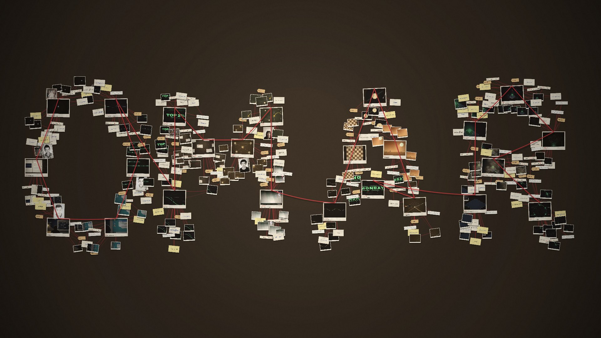

“I need to understand what is happening underneath.”The one instinct the whole film follows
Physics before it was assigned. A computer that stopped being his, and the years spent learning why. Networks, cybersecurity, digital forensics, friends, football, chess, westerns, one lucky interview, and the intelligent systems he builds from the ground up. Every chapter ends with a photograph that becomes evidence. At the end, all of it is on one board, and the board spells his name.
Each print is a real frame of the film, photographed at the moment it was captured. Six exhibits sit on each letter of the name, so this list is also the order the red thread follows on the board.

The walk across the board runs backwards from the latest evidence, the way an investigator works. That failure built this skill. That music came back years later. That person led to that interest. Then the camera pulls back. About 350 smaller pieces fill out the strokes: crops of the prints, handwritten notes, time tags, waveforms, and the threads that tie each one to its exhibit.
Earth, the Maghreb at night and the infrastructure map use NASA's Blue Marble and Black Marble imagery, and the late-night screen shows the Hubble eXtreme Deep Field (NASA, ESA). All are public domain. The photographs on the wall, the slate and the board, the laptop, and the two PES clips are Omar’s own. The galaxy, the cosmic web and everything else are procedural.